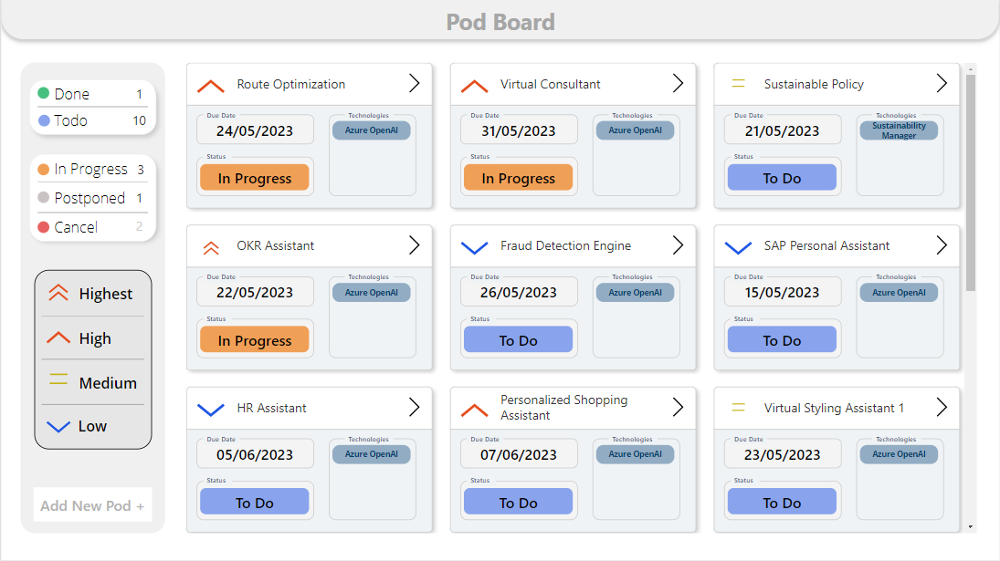
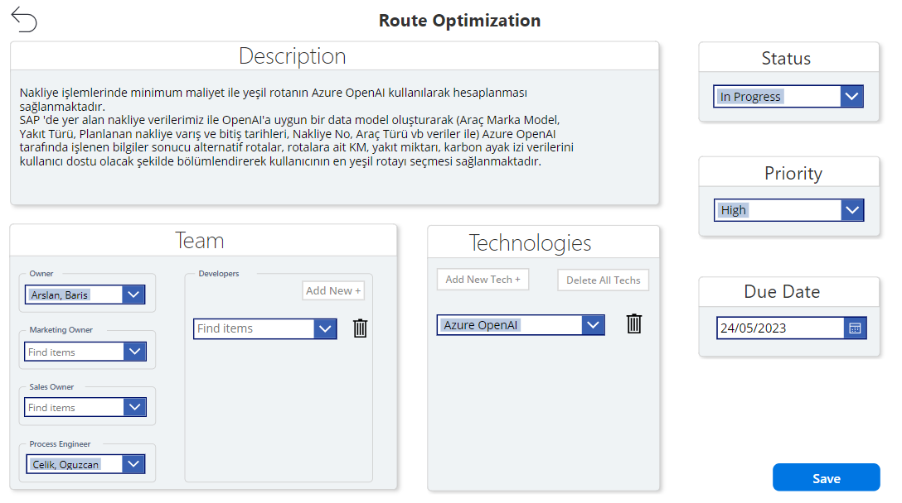
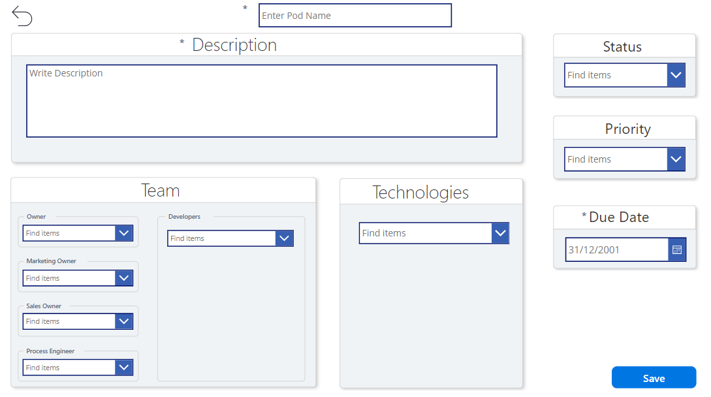

Projects
Pod Management App
The purpose of this app is pod management. you can think of each pod as new ideas planned to be made. I used Sharepoint for store the data. All fields are dynamic. I used canvas app for this app. I used 4 list in this app. These are PodInformationList, PodStatusList, PodPriorityList and PodTechnologyList. All the features you see in the project are in working condition.
The pods listed on the main page and displayed with a card view of the Pod Management App. It also has filtering features according to the status of the pods and their priority. With the Add new pod button, you are directed to the adding new pod page. When we click on the pods, it redirects to the detail page.
On the detail page, we can view the information of the pod and also edit it. Data is taken from Sharepoint. All informations retrieved dynamically from linked lists.
On the new pod add page, a new pod is added when necessary information is received. When the Save button is clicked, it instantly adds the new pod and returns to the main page. And we can view the newly added pod on the main page.
© Kubra Sambur Website. All Rights Reserved.